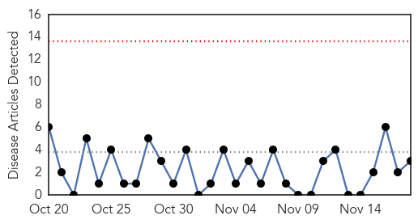
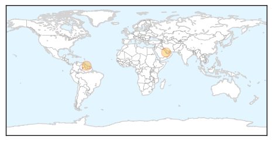
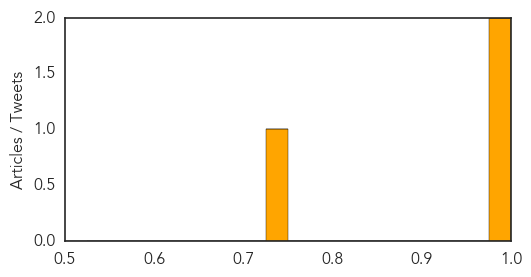
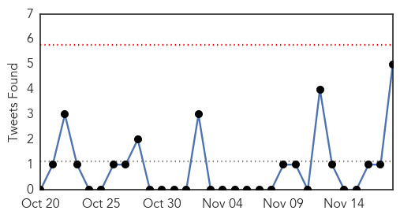
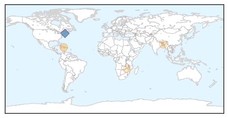

Swine Flu
30-Day Web Trend
0 alerts, 0 warnings

30-Day Twitter Trend
0 alerts, 0 warnings

Article Locations
Article Confidences
Top Articles:
Top Tweets:
-
No tweets found for Nov 18, 2015
Cholera
30-Day Web Trend
4 alerts, 1 warnings

30-Day Twitter Trend
0 alerts, 0 warnings

Article Locations
Article Confidences

Top Articles:
Top Tweets:
- 0.884
- RT: Sorry but tracing Haiti cholera epidemic's source was impt for public health says expert NotABlameGame https://t.c…
- 0.646
- RT: It's time for some accountability in Haiti's cholera outbreak: https://t.co/bRWO47QS2d via Haiti
- 0.646
- RT: It's time for some accountability in Haiti's cholera outbreak: https://t.co/bRWO47QS2d via Haiti
- 0.536
- RT: Cholera and blame in Haiti - The Lancet Infectious Diseases https://t.co/8jIrznzwRP
- 0.536
- RT: Cholera and blame in Haiti - The Lancet Infectious Diseases https://t.co/8jIrznzwRP